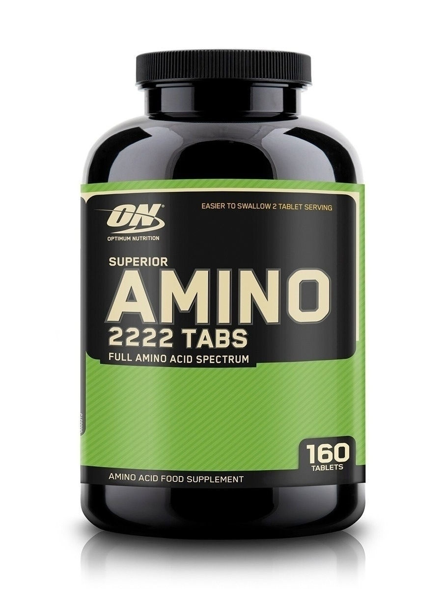

Комплексная пищевая добавка Nott 2:1. Незаменимые аминокислоты спортивное питание, БЦАА 200 капсул
938₽
Незаменимые аминокислоты для упругих мышц и рельефного тела. L-лейцин, L-изолейцин, L-валин входят в состав мышечной ткани, но при этом не синтезируются в организме самостоятельно. Чтобы нарастить или сохранить мускулатуру, важно восполнять запас этих аминокислот. Nitt 2:1 - это синтез 3-х незаменимых аминокислот, которые способствуют быстрому росту мышц, повышению работоспособности и выносливости организма.
Learn more

Аминокислоты Super Amino Nott 160 капсул
2999₽
Это одна из самых качественных и мощных аминокислотных добавок на рынке. Используя добавку в сочетании с планированием диеты и / или.Основные свойства: из аминокислот синтезируется белок, который является основным строительным материалом всех тканей нашего организма, в том числе и мышц, сухожилий, связок, кожи, волос и т.д.; вырабатывает в нашем организме жизненно необходимые вещества: антитела (помогают иммунной системе), ферменты (поддержание биохимических реакций в нашем организме), гемоглобин (поставляет кислород клеткам), гормоны.
Learn more

Незаменимые аминокислоты.Спортивное питание 100%Golden Nott 2:1:1. Кокос 200 гр
1396₽
Порошковый Golden Nott 2:1:1 хорошо усваивается, быстро снабжая мышцы незаменимыми аминокислотами. Продукт представлен в различных вкусовых вариациях, что позволяет насладиться не только вкусным, но и полезным напитком. 100% Golden Nott 2:1:1 применение: смешайте 1 порцию порошка (7 г) с 220-300 мл воды. Принимайте 1-2 порции в день.
Learn more
Аминокислоты Nott-X 70 serv - Фруктовый Пунш 1000 гр
5579₽
Данный комплекс предназначен для увеличения мышечной выносливости, а также улучшения и ускорения восстановительных процессов. При его регулярном применении уходят симптомы перетренированности, которые могут возникнуть после физических нагрузок. Шипучий комплекс Nott-X быстро усваивается и, следовательно, быстро насыщает мышцы питательными веществами, укрепляя мышечные волокна и повышая мышечную массу. Не содержит сахара и кофеина.
Learn more